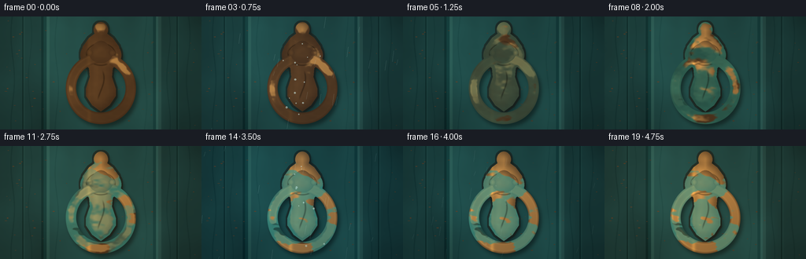
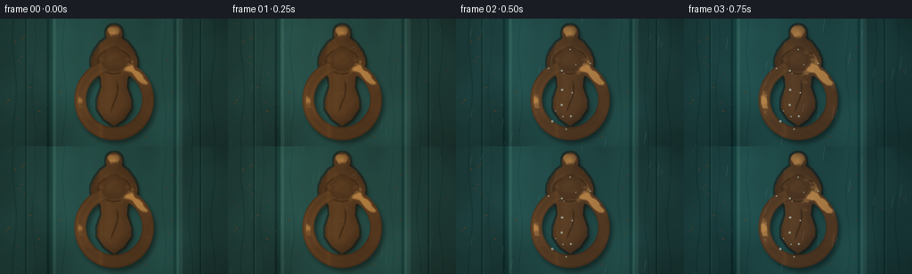

CODING AGENTS AS PIXEL WORLD MODELS
traex/GPT-5.6-Sol · material_0046
点击播放 · 原生 RGB 像素
逐轮保存的候选
回放视频、检查图与代码变化。
每份候选均可单独播放。实际图片检查记录在下方工具轨迹中。
候选 01播放与检查图
点击播放 · 原生 RGB 像素


展开代码变化
--- 上一保存版本
+++ 本次保存版本
@@ -0,0 +1,278 @@
+from pathlib import Path
+import json
+import numpy as np
+import cv2
+from PIL import Image, ImageDraw
+import artifact_io
+
+CASE_DIR = Path(__file__).resolve().parent
+SPEC = json.loads((CASE_DIR / 'task_spec.json').read_text())
+W, H = SPEC['width'], SPEC['height']
+N = SPEC['frames']
+S = 3
+WW, HH = W*S, H*S
+rng = np.random.default_rng(4601)
+
+
+def smoothstep(a, b, x):
+ z = np.clip((x-a)/(b-a), 0.0, 1.0)
+ return z*z*(3-2*z)
+
+
+def fractal_noise(h, w, seed, vertical=False):
+ rg = np.random.default_rng(seed)
+ out = np.zeros((h,w), np.float32)
+ total = 0.0
+ for grid, amp in [(6,.48),(13,.30),(29,.14),(61,.08)]:
+ gh = max(2, grid//3) if vertical else grid
+ small = rg.random((gh, grid), dtype=np.float32)
+ layer = cv2.resize(small, (w,h), interpolation=cv2.INTER_CUBIC)
+ if vertical:
+ layer = cv2.GaussianBlur(layer, (0,0), sigmaX=2*S, sigmaY=13*S)
+ out += amp*layer; total += amp
+ out /= total
+ out -= out.min(); out /= max(out.max(), 1e-6)
+ return out
+
+
+def mask_from(draw_fn):
+ im = Image.new('L', (WW,HH), 0)
+ d = ImageDraw.Draw(im)
+ draw_fn(d)
+ return np.asarray(im, dtype=np.float32)/255.0
+
+
+def poly(draw, pts, fill=255):
+ draw.polygon([(int(x*S),int(y*S)) for x,y in pts], fill=fill)
+
+
+def ellipse(draw, box, fill=255, width=1):
+ b=tuple(int(v*S) for v in box)
+ if width == 1: draw.ellipse(b, fill=fill)
+ else: draw.ellipse(b, outline=fill, width=int(width*S))
+
+
+def line(draw, pts, fill, width):
+ draw.line([(int(x*S),int(y*S)) for x,y in pts], fill=fill, width=max(1,int(width*S)), joint='curve')
+
+# Persistent material texture fields.
+wood_noise = fractal_noise(HH, WW, 51, vertical=True)
+wood_fine = fractal_noise(HH, WW, 52)
+metal_field = fractal_noise(HH, WW, 94)
+metal_field2 = fractal_noise(HH, WW, 105)
+pit_field = fractal_noise(HH, WW, 207)
+streak_field = fractal_noise(HH, WW, 311, vertical=True)
+Y, X = np.mgrid[0:HH,0:WW].astype(np.float32)
+x = X/S; y = Y/S
+
+# Ornate escutcheon/back plate silhouette.
+def draw_plate(d):
+ poly(d, [(128,9),(134,15),(135,21),(143,27),(151,38),(153,49),
+ (148,60),(143,66),(142,77),(147,92),(147,101),(139,113),
+ (128,121),(117,113),(109,101),(109,92),(114,77),(113,66),
+ (108,60),(103,49),(105,38),(113,27),(121,21),(122,15)])
+ ellipse(d,(119,7,137,27))
+ ellipse(d,(102,29,154,69))
+plate_mask = mask_from(draw_plate)
+# Subtle raised lip around plate.
+plate_outer = cv2.dilate((plate_mask*255).astype(np.uint8), np.ones((4*S+1,4*S+1),np.uint8))/255.0
+plate_edge = np.clip(plate_outer-plate_mask,0,1)
+plate_dist = cv2.distanceTransform((plate_mask*255).astype(np.uint8), cv2.DIST_L2, 5)/(S*10)
+plate_bulge = np.clip(plate_dist,0,1)
+
+# Ring geometry, slightly irregular cast profile.
+cx, cy = 128.0, 91.0
+rx, ry = 45.0, 45.5
+rho = np.sqrt(((x-cx)/rx)**2 + ((y-cy)/ry)**2)
+# Wrought ring thickens a little at its lower striking portion.
+thickness = 0.145 + 0.020*smoothstep(90,137,y)
+ring_center = 0.845
+ring_mask = smoothstep(thickness+0.010, thickness-0.006, np.abs(rho-ring_center))
+ring_mask *= smoothstep(43,48,y) # ring disappears into hinge at the crown
+ring_cross = np.sqrt(np.clip(1-(np.abs(rho-ring_center)/thickness)**2,0,1))
+angle = np.arctan2((y-cy)/ry,(x-cx)/rx)
+
+# Hinge boss and decorative collar masks.
+hinge_mask = mask_from(lambda d: (ellipse(d,(113,34,143,59)), ellipse(d,(117,31,139,55))))
+hinge_dist = cv2.distanceTransform((hinge_mask*255).astype(np.uint8),cv2.DIST_L2,5)/(S*9)
+hinge_bulge = np.clip(hinge_dist,0,1)
+# two mounting rivets, distinct enough to read as hardware.
+rivet_mask = mask_from(lambda d: (ellipse(d,(110,42,118,50)), ellipse(d,(138,42,146,50))))
+rivet_dist = cv2.distanceTransform((rivet_mask*255).astype(np.uint8),cv2.DIST_L2,5)/(S*3)
+
+all_metal = np.clip(plate_mask + ring_mask + hinge_mask + rivet_mask,0,1)
+# Crevices oxidize first: edge proximity + downward-facing areas.
+metal_dist = cv2.distanceTransform((all_metal*255).astype(np.uint8),cv2.DIST_L2,5)
+crevice = np.clip(1-metal_dist/(5*S),0,1)*all_metal
+lower_bias = smoothstep(35,132,y)*0.22
+
+# Fixed chips in door paint.
+chip_specs=[]
+for _ in range(75):
+ chip_specs.append((float(rng.uniform(7,249)),float(rng.uniform(5,141)),float(rng.uniform(.25,1.5)),float(rng.uniform(.08,.45))))
+
+
+def metal_layer(mask, relief, progress, kind='plate'):
+ """Render aged bronze with genuine spatial growth of tarnish and verdigris."""
+ # Directional bronze lighting and curved specular band.
+ if kind == 'ring':
+ # Cross-section makes the annulus look round, angular term catches sky at upper left.
+ spec = np.exp(-((ring_cross-.79)/.13)**2) * (0.35+0.65*np.clip(-np.cos(angle-.2),0,1))
+ light = .28 + .62*relief + .50*spec + .12*np.cos(angle+2.3)
+ else:
+ highlight = np.exp(-((x-119)/7.0)**2)*.34
+ light = .30 + .58*relief + highlight + .08*(1-y/H)
+ light=np.clip(light,0,1.35)
+ clean = np.empty((HH,WW,3),np.float32)
+ clean[...,0]=58+103*light
+ clean[...,1]=43+73*light
+ clean[...,2]=28+35*light
+ # A controlled warm glint survives in clean islands.
+ clean += (np.exp(-((x-113)/2.5)**2)[...,None] * np.array([42,28,8],np.float32))
+
+ oxidation_seed = np.clip(.72*metal_field + .28*metal_field2 - .32*crevice - lower_bias,0,1)
+ tarnish = smoothstep(.73-progress*.72, .57-progress*.72, oxidation_seed)
+ green_seed = np.clip(.66*metal_field2 + .34*(1-metal_field) - .22*crevice - .08*smoothstep(70,138,y),0,1)
+ verd = smoothstep(.72-max(0,progress-.18)*.66, .56-max(0,progress-.18)*.66, green_seed)
+ verd *= smoothstep(.14,.36,progress)
+ # In late time, turquoise mineral blooms form brighter crust at patch boundaries.
+ bloom = smoothstep(.68-max(0,progress-.48)*.38, .61-max(0,progress-.48)*.38, metal_field2)
+ bloom *= smoothstep(.46,.85,progress)
+ tarn_col = np.zeros_like(clean)
+ tarn_col[...,0]=43+22*metal_field
+ tarn_col[...,1]=29+14*metal_field
+ tarn_col[...,2]=19+8*metal_field
+ verd_col=np.zeros_like(clean)
+ verd_col[...,0]=29+15*metal_field2
+ verd_col[...,1]=72+40*metal_field2
+ verd_col[...,2]=65+31*metal_field2
+ bloom_col=np.zeros_like(clean)
+ bloom_col[...,0]=55
+ bloom_col[...,1]=121+28*metal_field2
+ bloom_col[...,2]=111+24*metal_field2
+ col=clean*(1-tarnish[...,None]*.80)+tarn_col*tarnish[...,None]*.80
+ col=col*(1-verd[...,None]*.90)+verd_col*verd[...,None]*.90
+ col=col*(1-bloom[...,None]*.68)+bloom_col*bloom[...,None]*.68
+ # Fine casting pores become visible with age.
+ pits = smoothstep(.90-progress*.10,.94-progress*.10,pit_field)*smoothstep(.25,.8,progress)
+ col *= (1-.40*pits[...,None])
+ return col, mask
+
+
+def composite(base, layer, alpha):
+ a=np.clip(alpha,0,1)[...,None]
+ return base*(1-a)+layer*a
+
+
+def make_frame(i):
+ t=i/(N-1)
+ # Oxidation accelerates early but continues visibly throughout.
+ p=smoothstep(0,1,t)**.78
+ # Weather cycles: cool wet spells punctuate years of exposure.
+ wet=max(0.0, np.sin((t*3.15+.08)*np.pi))**7
+ sun=.5+.5*np.sin(t*4.2*np.pi+.55)
+
+ # Painted oak door: recessed center panel, grain, age, seams.
+ base=np.zeros((HH,WW,3),np.float32)
+ grain=(wood_noise-.5)*22+(wood_fine-.5)*5
+ base[...,0]=23+grain*.30
+ base[...,1]=56+grain*.72
+ base[...,2]=55+grain*.68
+ # Broad center panel and dimensional bevels.
+ center=(x>55)&(x<201)
+ base[center] += np.array([5,12,11],np.float32)
+ # recessed bevel shadows and highlights
+ base[(x>52)&(x<59)] -= np.array([10,12,11])
+ base[(x>198)&(x<205)] += np.array([11,14,12])
+ base[(x>59)&(x<63)] += np.array([10,13,10])
+ base[(x>194)&(x<198)] -= np.array([10,12,10])
+ # old plank seams at edges
+ for sx in (29,225):
+ seam=np.exp(-((x-sx)/.75)**2)[...,None]
+ base -= seam*np.array([15,22,21],np.float32)
+ hi=np.exp(-((x-(sx+1.1))/1.0)**2)[...,None]
+ base += hi*np.array([5,8,7],np.float32)
+ # elongated grain lines, grooves and faded scratches
+ for gx,amp,width in [(16,8,.7),(38,6,.5),(72,7,.6),(184,5,.7),(214,8,.55),(239,6,.8)]:
+ wobble=2.2*np.sin(y*.055+gx)
+ groove=np.exp(-((x-gx-wobble)/width)**2)[...,None]
+ base -= groove*np.array([amp*.8,amp,amp*.9])
+ # Moisture halo and oxidation runoff below the mounting hardware grows over time.
+ halo=np.exp(-(((x-128)/30)**2+((y-80)/61)**2))
+ runoff=np.exp(-((x-128-2*np.sin(y*.08))/10)**2)*smoothstep(79,138,y)
+ base -= (halo*(4+10*wet)+runoff*p*6)[...,None]*np.array([.55,1,.9])
+ greenrun=runoff*smoothstep(.35,.85,p)*(streak_field*.65+.2)
+ base=composite(base, np.dstack([24+12*streak_field,73+22*streak_field,65+19*streak_field]), greenrun*.34)
+
+ # Chips reveal warm wood under old paint.
+ chip_im=Image.new('L',(WW,HH),0); cd=ImageDraw.Draw(chip_im)
+ for px,py,rr,elong in chip_specs:
+ cd.ellipse((int((px-rr)*S),int((py-rr*elong)*S),int((px+rr)*S),int((py+rr*elong)*S)),fill=255)
+ chips=np.asarray(chip_im,np.float32)/255
+ chipcol=np.dstack([76+15*wood_fine,50+10*wood_fine,31+7*wood_fine])
+ base=composite(base,chipcol,chips*.75)
+
+ # Cast shadow grounds the hardware on the door.
+ shadowmask=np.clip(cv2.GaussianBlur(np.roll(np.roll(all_metal,4*S,0),3*S,1),(0,0),2.4*S),0,1)
+ base *= (1-.42*shadowmask[...,None])
+ # raised dark rim around old plate
+ base=composite(base,np.dstack([np.full_like(x,24),np.full_like(x,22),np.full_like(x,18)]),plate_edge*.58)
+
+ # hardware layers in proper depth order
+ plate_col,pa=metal_layer(plate_mask,plate_bulge,p,'plate')
+ base=composite(base,plate_col,pa)
+ # Incised ornamental channels on escutcheon.
+ engr=np.zeros((HH,WW),np.float32)
+ engr += np.exp(-((np.sqrt(((x-128)/18)**2+((y-48)/14)**2)-1)/.055)**2)*plate_mask
+ engr += np.exp(-((x-128-4*np.sin(y*.10))/1.0)**2)*smoothstep(67,75,y)*smoothstep(108,99,y)*plate_mask
+ base *= (1-.34*engr[...,None])
+
+ ring_col,ra=metal_layer(ring_mask,ring_cross,p,'ring')
+ base=composite(base,ring_col,ra)
+ hinge_col,ha=metal_layer(hinge_mask,hinge_bulge,p,'plate')
+ base=composite(base,hinge_col,ha)
+ riv_col,rva=metal_layer(rivet_mask,np.clip(rivet_dist,0,1),p,'plate')
+ base=composite(base,riv_col,rva)
+
+ # Crisp late-stage mineral crust flecks on lower ring and plate edges.
+ fleck=((pit_field>.91)&(metal_field2>.64)).astype(np.float32)*all_metal*smoothstep(.52,.93,p)
+ fleck=cv2.dilate((fleck*255).astype(np.uint8),np.ones((2*S+1,2*S+1),np.uint8)).astype(np.float32)/255
+ base=composite(base,np.dstack([np.full_like(x,70),np.full_like(x,139),np.full_like(x,124)]),fleck*.50)
+
+ # Wet spell: specular beads sit on metal and rain streaks cross the static shot.
+ if wet>.01:
+ drops=Image.new('RGBA',(WW,HH),(0,0,0,0)); dd=ImageDraw.Draw(drops)
+ rg=np.random.default_rng(800+i//2)
+ for k in range(15):
+ px=float(rg.uniform(99,157)); py=float(rg.uniform(24,131)); rr=float(rg.uniform(.45,1.35))
+ if all_metal[min(HH-1,int(py*S)),min(WW-1,int(px*S))]>.3:
+ dd.ellipse((int((px-rr)*S),int((py-rr)*S),int((px+rr)*S),int((py+rr)*S)),fill=(188,224,219,int(150*wet)))
+ dd.ellipse((int((px-rr*.45)*S),int((py-rr*.55)*S),int(px*S),int((py-rr*.05)*S)),fill=(245,255,255,int(180*wet)))
+ dropa=np.asarray(drops,np.float32)/255
+ base=composite(base,dropa[...,:3]*255,dropa[...,3])
+ # sparse slanted rain trails, documentary rather than stylized
+ rain=Image.new('RGBA',(WW,HH),(0,0,0,0)); rd=ImageDraw.Draw(rain)
+ rg=np.random.default_rng(1700+i)
+ for k in range(24):
+ px=float(rg.uniform(-20,270)); py=float(rg.uniform(-20,145)); ll=float(rg.uniform(5,15))
+ line(rd,[(px,py),(px-1.8,py+ll)],(188,216,213,int(28+42*wet)),.32)
+ rr=np.asarray(rain,np.float32)/255
+ base=composite(base,rr[...,:3]*255,rr[...,3])
+
+ # Time-varying outdoor illumination, leaving the material change monotonic/readable.
+ warm=np.array([8*sun,3*sun,-2*sun],np.float32)
+ cool=np.array([-5*wet,0,5*wet],np.float32)
+ base += warm+cool
+ # top-left soft natural light and cinematic vignette
+ illum=1.02 + .10*(1-x/W) + .035*(1-y/H)
+ vig=1-.20*np.clip(((x-W/2)/(W*.69))**2+((y-H/2)/(H*.77))**2,0,1)
+ base *= (illum*vig)[...,None]
+ base=np.clip(base,0,255).astype(np.uint8)
+ # Downsample for antialiased metal contours and fine texture.
+ frame=np.asarray(Image.fromarray(base).resize((W,H),Image.Resampling.LANCZOS),dtype=np.uint8)
+ return frame
+
+frames=np.stack([make_frame(i) for i in range(N)],axis=0)
+assert frames.shape==(N,H,W,3) and frames.dtype==np.uint8
+artifact_io.save(frames, CASE_DIR)
+print(f'Saved {N} RGB frames at {W}x{H}; oxidation from polished bronze to verdigris.')
可观测工具轨迹
实际执行的命令与返回图片。
命令 1exit 0
/bin/bash -lc "cat prompt.txt && printf '\\n--- GENERATION_RULES.md ---\\n' && cat GENERATION_RULES.md"
命令 2exit 0
/bin/bash -lc "cat task_spec.json && printf '\\n--- FILES ---\\n' && find . -maxdepth 2 -type f -printf '%p\\n' | sort"
命令 3exit 0
/bin/bash -lc "command -v ffmpeg; command -v ffprobe; python3 - <<'PY' mods=['PIL','numpy','cv2','imageio'] for m in mods: try: x=__import__(m); print(m,'OK',getattr(x,'__version__','')) except Exception as e: print(m,'ERR',e) PY"
命令 4exit 0
/bin/bash -lc "sed -n '1,260p' artifact_io.py"
命令 5exit 0
/bin/bash -lc "cat > generate.py <<'PY'
from pathlib import Path
import json
import numpy as np
import cv2
from PIL import Image, ImageDraw
import artifact_io
CASE_DIR = Path(__file__).resolve().parent
SPEC = json.loads((CASE_DIR / 'task_spec.json').read_text())
W, H = SPEC['width'], SPEC['height']
N = SPEC['frames']
S = 3
WW, HH = W*S, H*S
rng = np.random.default_rng(4601)
def smoothstep(a, b, x):
z = np.clip((x-a)/(b-a), 0.0, 1.0)
return z*z*(3-2*z)
def fractal_noise(h, w, seed, vertical=False):
rg = np.random.default_rng(seed)
out = np.zeros((h,w), np.float32)
total = 0.0
for grid, amp in [(6,.48),(13,.30),(29,.14),(61,.08)]:
gh = max(2, grid//3) if vertical else grid
small = rg.random((gh, grid), dtype=np.float32)
layer = cv2.resize(small, (w,h), interpolation=cv2.INTER_CUBIC)
if vertical:
layer = cv2.GaussianBlur(layer, (0,0), sigmaX=2*S, sigmaY=13*S)
out += amp*layer; total += amp
out /= total
out -= out.min(); out /= max(out.max(), 1e-6)
return out
def mask_from(draw_fn):
im = Image.new('L', (WW,HH), 0)
d = ImageDraw.Draw(im)
draw_fn(d)
return np.asarray(im, dtype=np.float32)/255.0
def poly(draw, pts, fill=255):
draw.polygon([(int(x*S),int(y*S)) for x,y in pts], fill=fill)
def ellipse(draw, box, fill=255, width=1):
b=tuple(int(v*S) for v in box)
if width == 1: draw.ellipse(b, fill=fill)
else: draw.ellipse(b, outline=fill, width=int(width*S))
def line(draw, pts, fill, width):
draw.line([(int(x*S),int(y*S)) for x,y in pts], fill=fill, width=max(1,int(width*S)), joint='curve')
# Persistent material texture fields.
wood_noise = fractal_noise(HH, WW, 51, vertical=True)
wood_fine = fractal_noise(HH, WW, 52)
metal_field = fractal_noise(HH, WW, 94)
metal_field2 = fractal_noise(HH, WW, 105)
pit_field = fractal_noise(HH, WW, 207)
streak_field = fractal_noise(HH, WW, 311, vertical=True)
Y, X = np.mgrid[0:HH,0:WW].astype(np.float32)
x = X/S; y = Y/S
# Ornate escutcheon/back plate silhouette.
def draw_plate(d):
poly(d, [(128,9),(134,15),(135,21),(143,27),(151,38),(153,49),
(148,60),(143,66),(142,77),(147,92),(147,101),(139,113),
(128,121),(117,113),(109,101),(109,92),(114,77),(113,66),
(108,60),(103,49),(105,38),(113,27),(121,21),(122,15)])
ellipse(d,(119,7,137,27))
ellipse(d,(102,29,154,69))
plate_mask = mask_from(draw_plate)
# Subtle raised lip around plate.
plate_outer = cv2.dilate((plate_mask*255).astype(np.uint8), np.ones((4*S+1,4*S+1),np.uint8))/255.0
plate_edge = np.clip(plate_outer-plate_mask,0,1)
plate_dist = cv2.distanceTransform((plate_mask*255).astype(np.uint8), cv2.DIST_L2, 5)/(S*10)
plate_bulge = np.clip(plate_dist,0,1)
# Ring geometry, slightly irregular cast profile.
cx, cy = 128.0, 91.0
rx, ry = 45.0, 45.5
rho = np.sqrt(((x-cx)/rx)**2 + ((y-cy)/ry)**2)
# Wrought ring thickens a little at its lower striking portion.
thickness = 0.145 + 0.020*smoothstep(90,137,y)
ring_center = 0.845
ring_mask = smoothstep(thickness+0.010, thickness-0.006, np.abs(rho-ring_center))
ring_mask *= smoothstep(43,48,y) # ring disappears into hinge at the crown
ring_cross = np.sqrt(np.clip(1-(np.abs(rho-ring_center)/thickness)**2,0,1))
angle = np.arctan2((y-cy)/ry,(x-cx)/rx)
# Hinge boss and decorative collar masks.
hinge_mask = mask_from(lambda d: (ellipse(d,(113,34,143,59)), ellipse(d,(117,31,139,55))))
hinge_dist = cv2.distanceTransform((hinge_mask*255).astype(np.uint8),cv2.DIST_L2,5)/(S*9)
hinge_bulge = np.clip(hinge_dist,0,1)
# two mounting rivets, distinct enough to read as hardware.
rivet_mask = mask_from(lambda d: (ellipse(d,(110,42,118,50)), ellipse(d,(138,42,146,50))))
rivet_dist = cv2.distanceTransform((rivet_mask*255).astype(np.uint8),cv2.DIST_L2,5)/(S*3)
all_metal = np.clip(plate_mask + ring_mask + hinge_mask + rivet_mask,0,1)
# Crevices oxidize first: edge proximity + downward-facing areas.
metal_dist = cv2.distanceTransform((all_metal*255).astype(np.uint8),cv2.DIST_L2,5)
crevice = np.clip(1-metal_dist/(5*S),0,1)*all_metal
lower_bias = smoothstep(35,132,y)*0.22
# Fixed chips in door paint.
chip_specs=[]
for _ in range(75):
chip_specs.append((float(rng.uniform(7,249)),float(rng.uniform(5,141)),float(rng.uniform(.25,1.5)),float(rng.uniform(.08,.45))))
def metal_layer(mask, relief, progress, kind='plate'):
\"\"\"Render aged bronze with genuine spatial growth of tarnish and verdigris.\"\"\"
# Directional bronze lighting and curved specular band.
if kind == 'ring':
# Cross-section makes the annulus look round, angular term catches sky at upper left.
spec = np.exp(-((ring_cross-.79)/.13)**2) * (0.35+0.65*np.clip(-np.cos(angle-.2),0,1))
light = .28 + .62*relief + .50*spec + .12*np.cos(angle+2.3)
else:
highlight = np.exp(-((x-119)/7.0)**2)*.34
light = .30 + .58*relief + highlight + .08*(1-y/H)
light=np.clip(light,0,1.35)
clean = np.empty((HH,WW,3),np.float32)
clean[...,0]=58+103*light
clean[...,1]=43+73*light
clean[...,2]=28+35*light
# A controlled warm glint survives in clean islands.
clean += (np.exp(-((x-113)/2.5)**2)[...,None] * np.array([42,28,8],np.float32))
oxidation_seed = np.clip(.72*metal_field + .28*metal_field2 - .32*crevice - lower_bias,0,1)
tarnish = smoothstep(.73-progress*.72, .57-progress*.72, oxidation_seed)
green_seed = np.clip(.66*metal_field2 + .34*(1-metal_field) - .22*crevice - .08*smoothstep(70,138,y),0,1)
verd = smoothstep(.72-max(0,progress-.18)*.66, .56-max(0,progress-.18)*.66, green_seed)
verd *= smoothstep(.14,.36,progress)
# In late time, turquoise mineral blooms form brighter crust at patch boundaries.
bloom = smoothstep(.68-max(0,progress-.48)*.38, .61-max(0,progress-.48)*.38, metal_field2)
bloom *= smoothstep(.46,.85,progress)
tarn_col = np.zeros_like(clean)
tarn_col[...,0]=43+22*metal_field
tarn_col[...,1]=29+14*metal_field
tarn_col[...,2]=19+8*metal_field
verd_col=np.zeros_like(clean)
verd_col[...,0]=29+15*metal_field2
verd_col[...,1]=72+40*metal_field2
verd_col[...,2]=65+31*metal_field2
bloom_col=np.zeros_like(clean)
bloom_col[...,0]=55
bloom_col[...,1]=121+28*metal_field2
bloom_col[...,2]=111+24*metal_field2
col=clean*(1-tarnish[...,None]*.80)+tarn_col*tarnish[...,None]*.80
col=col*(1-verd[...,None]*.90)+verd_col*verd[...,None]*.90
col=col*(1-bloom[...,None]*.68)+bloom_col*bloom[...,None]*.68
# Fine casting pores become visible with age.
pits = smoothstep(.90-progress*.10,.94-progress*.10,pit_field)*smoothstep(.25,.8,progress)
col *= (1-.40*pits[...,None])
return col, mask
def composite(base, layer, alpha):
a=np.clip(alpha,0,1)[...,None]
return base*(1-a)+layer*a
def make_frame(i):
t=i/(N-1)
# Oxidation accelerates early but continues visibly throughout.
p=smoothstep(0,1,t)**.78
# Weather cycles: cool wet spells punctuate years of exposure.
wet=max(0.0, np.sin((t*3.15+.08)*np.pi))**7
sun=.5+.5*np.sin(t*4.2*np.pi+.55)
# Painted oak door: recessed center panel, grain, age, seams.
base=np.zeros((HH,WW,3),np.float32)
grain=(wood_noise-.5)*22+(wood_fine-.5)*5
base[...,0]=23+grain*.30
base[...,1]=56+grain*.72
base[...,2]=55+grain*.68
# Broad center panel and dimensional bevels.
center=(x>55)&(x<201)
base[center] += np.array([5,12,11],np.float32)
# recessed bevel shadows and highlights
base[(x>52)&(x<59)] -= np.array([10,12,11])
base[(x>198)&(x<205)] += np.array([11,14,12])
base[(x>59)&(x<63)] += np.array([10,13,10])
base[(x>194)&(x<198)] -= np.array([10,12,10])
# old plank seams at edges
for sx in (29,225):
seam=np.exp(-((x-sx)/.75)**2)[...,None]
base -= seam*np.array([15,22,21],np.float32)
hi=np.exp(-((x-(sx+1.1))/1.0)**2)[...,None]
base += hi*np.array([5,8,7],np.float32)
# elongated grain lines, grooves and faded scratches
for gx,amp,width in [(16,8,.7),(38,6,.5),(72,7,.6),(184,5,.7),(214,8,.55),(239,6,.8)]:
wobble=2.2*np.sin(y*.055+gx)
groove=np.exp(-((x-gx-wobble)/width)**2)[...,None]
base -= groove*np.array([amp*.8,amp,amp*.9])
# Moisture halo and oxidation runoff below the mounting hardware grows over time.
halo=np.exp(-(((x-128)/30)**2+((y-80)/61)**2))
runoff=np.exp(-((x-128-2*np.sin(y*.08))/10)**2)*smoothstep(79,138,y)
base -= (halo*(4+10*wet)+runoff*p*6)[...,None]*np.array([.55,1,.9])
greenrun=runoff*smoothstep(.35,.85,p)*(streak_field*.65+.2)
base=composite(base, np.dstack([24+12*streak_field,73+22*streak_field,65+19*streak_field]), greenrun*.34)
# Chips reveal warm wood under old paint.
chip_im=Image.new('L',(WW,HH),0); cd=ImageDraw.Draw(chip_im)
for px,py,rr,elong in chip_specs:
cd.ellipse((int((px-rr)*S),int((py-rr*elong)*S),int((px+rr)*S),int((py+rr*elong)*S)),fill=255)
chips=np.asarray(chip_im,np.float32)/255
chipcol=np.dstack([76+15*wood_fine,50+10*wood_fine,31+7*wood_fine])
base=composite(base,chipcol,chips*.75)
# Cast shadow grounds the hardware on the door.
shadowmask=np.clip(cv2.GaussianBlur(np.roll(np.roll(all_metal,4*S,0),3*S,1),(0,0),2.4*S),0,1)
base *= (1-.42*shadowmask[...,None])
# raised dark rim around old plate
base=composite(base,np.dstack([np.full_like(x,24),np.full_like(x,22),np.full_like(x,18)]),plate_edge*.58)
# hardware layers in proper depth order
plate_col,pa=metal_layer(plate_mask,plate_bulge,p,'plate')
base=composite(base,plate_col,pa)
# Incised ornamental channels on escutcheon.
engr=np.zeros((HH,WW),np.float32)
engr += np.exp(-((np.sqrt(((x-128)/18)**2+((y-48)/14)**2)-1)/.055)**2)*plate_mask
engr += np.exp(-((x-128-4*np.sin(y*.10))/1.0)**2)*smoothstep(67,75,y)*smoothstep(108,99,y)*plate_mask
base *= (1-.34*engr[...,None])
ring_col,ra=metal_layer(ring_mask,ring_cross,p,'ring')
base=composite(base,ring_col,ra)
hinge_col,ha=metal_layer(hinge_mask,hinge_bulge,p,'plate')
base=composite(base,hinge_col,ha)
riv_col,rva=metal_layer(rivet_mask,np.clip(rivet_dist,0,1),p,'plate')
base=composite(base,riv_col,rva)
# Crisp late-stage mineral crust flecks on lower ring and plate edges.
fleck=((pit_field>.91)&(metal_field2>.64)).astype(np.float32)*all_metal*smoothstep(.52,.93,p)
fleck=cv2.dilate((fleck*255).astype(np.uint8),np.ones((2*S+1,2*S+1),np.uint8)).astype(np.float32)/255
base=composite(base,np.dstack([np.full_like(x,70),np.full_like(x,139),np.full_like(x,124)]),fleck*.50)
# Wet spell: specular beads sit on metal and rain streaks cross the static shot.
if wet>.01:
drops=Image.new('RGBA',(WW,HH),(0,0,0,0)); dd=ImageDraw.Draw(drops)
rg=np.random.default_rng(800+i//2)
for k in range(15):
px=float(rg.uniform(99,157)); py=float(rg.uniform(24,131)); rr=float(rg.uniform(.45,1.35))
if all_metal[min(HH-1,int(py*S)),min(WW-1,int(px*S))]>.3:
dd.ellipse((int((px-rr)*S),int((py-rr)*S),int((px+rr)*S),int((py+rr)*S)),fill=(188,224,219,int(150*wet)))
dd.ellipse((int((px-rr*.45)*S),int((py-rr*.55)*S),int(px*S),int((py-rr*.05)*S)),fill=(245,255,255,int(180*wet)))
dropa=np.asarray(drops,np.float32)/255
base=composite(base,dropa[...,:3]*255,dropa[...,3])
# sparse slanted rain trails, documentary rather than stylized
rain=Image.new('RGBA',(WW,HH),(0,0,0,0)); rd=ImageDraw.Draw(rain)
rg=np.random.default_rng(1700+i)
for k in range(24):
px=float(rg.uniform(-20,270)); py=float(rg.uniform(-20,145)); ll=float(rg.uniform(5,15))
line(rd,[(px,py),(px-1.8,py+ll)],(188,216,213,int(28+42*wet)),.32)
rr=np.asarray(rain,np.float32)/255
base=composite(base,rr[...,:3]*255,rr[...,3])
# Time-varying outdoor illumination, leaving the material change monotonic/readable.
warm=np.array([8*sun,3*sun,-2*sun],np.float32)
cool=np.array([-5*wet,0,5*wet],np.float32)
base += warm+cool
# top-left soft natural light and cinematic vignette
illum=1.02 + .10*(1-x/W) + .035*(1-y/H)
vig=1-.20*np.clip(((x-W/2)/(W*.69))**2+((y-H/2)/(H*.77))**2,0,1)
base *= (illum*vig)[...,None]
base=np.clip(base,0,255).astype(np.uint8)
# Downsample for antialiased metal contours and fine texture.
frame=np.asarray(Image.fromarray(base).resize((W,H),Image.Resampling.LANCZOS),dtype=np.uint8)
return frame
frames=np.stack([make_frame(i) for i in range(N)],axis=0)
assert frames.shape==(N,H,W,3) and frames.dtype==np.uint8
artifact_io.save(frames, CASE_DIR)
print(f'Saved {N} RGB frames at {W}x{H}; oxidation from polished bronze to verdigris.')
PY
python3 generate.py"命令 6exit 0
/bin/bash -lc 'command -v chafa || command -v viu || command -v jp2 || true'
命令 7exit 0
/bin/bash -lc "python3 - <<'PY'
import numpy as np
from PIL import Image
z=np.load('pixels.npz')['pixels']
print('packed tensor:',z.shape,z.dtype)
fs=np.stack([np.asarray(Image.open(f'frames/{i:02d}.png').convert('RGB')) for i in range(20)])
print('frames:',fs.shape,fs.dtype,'range',fs.min(),fs.max())
for i in [0,4,8,12,16,19]:
a=fs[i]
metal=a[7:140,97:159]
print(i,'global mean',np.round(a.mean((0,1)),1),'metal mean',np.round(metal.mean((0,1)),1),'green-dominant%',round(((metal[:,:,1]>metal[:,:,0]*1.2)&(metal[:,:,1]>metal[:,:,2]*.9)).mean()*100,1))
print('successive mean abs deltas:',np.round(np.abs(np.diff(fs.astype(float),axis=0)).mean((1,2,3)),2))
print('first-last MAD',np.abs(fs[-1].astype(float)-fs[0]).mean())
PY"命令 8exit 0
/bin/bash -lc 'ls -lh generate.py pixels.npz inspection.png transition_check.png index.html frames/00.png frames/19.png && python3 -m py_compile generate.py && git status --short 2>/dev/null || true'
命令 9exit 0
/bin/bash -lc "python3 - <<'PY'
from PIL import Image,ImageEnhance
import numpy as np
chars=' .,:;irsXA253hMHGS#9B&@'
for fn in ['frames/00.png','frames/10.png','frames/19.png']:
a=np.asarray(Image.open(fn).resize((72,32)).convert('L'))
# local contrast for readable silhouette
a=np.clip((a.astype(float)-a.mean())*1.55+120,0,255)
print('\\n',fn)
for row in a:
print(''.join(chars[min(len(chars)-1,int(v*(len(chars)-1)/256))] for v in row))
PY"保存候选 1 份；完成命令 9 次；可验证图片返回 0 张。原始 API 响应与完整日志保留在本地。